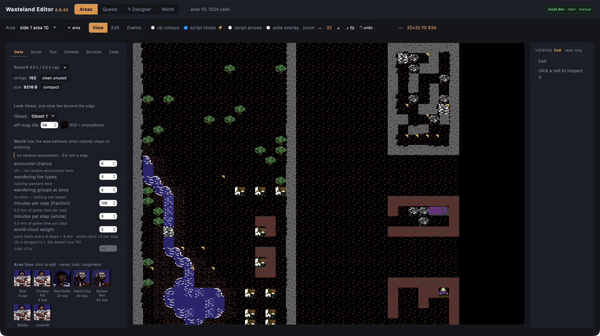
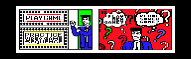
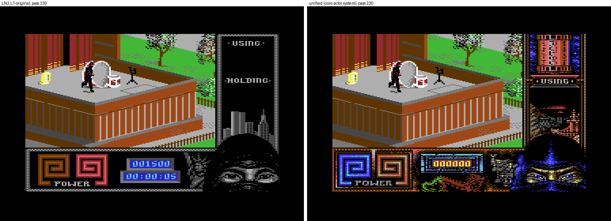
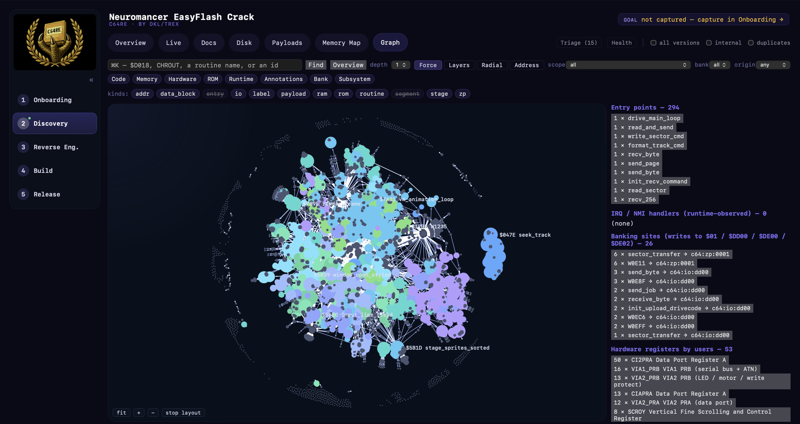
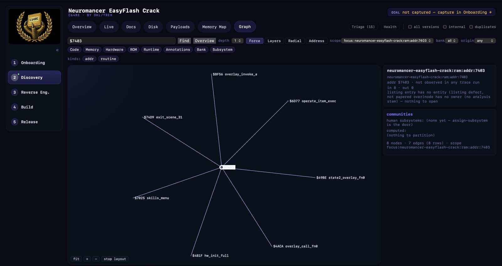
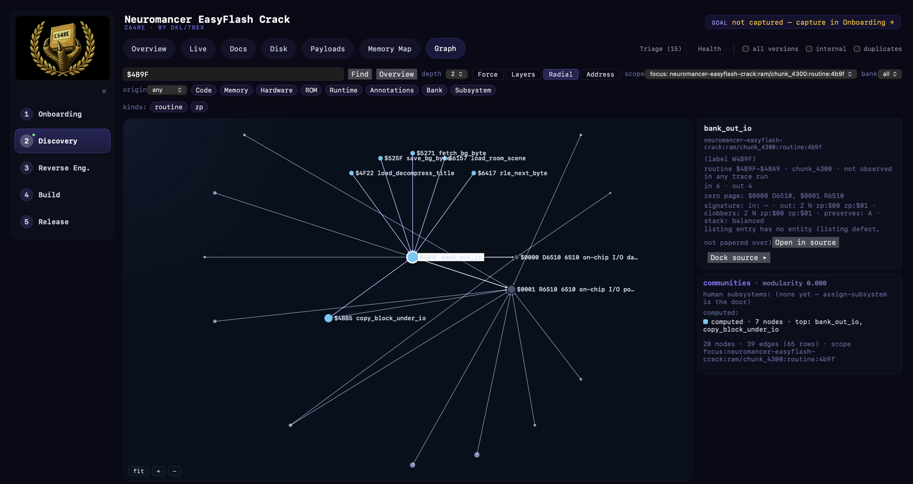
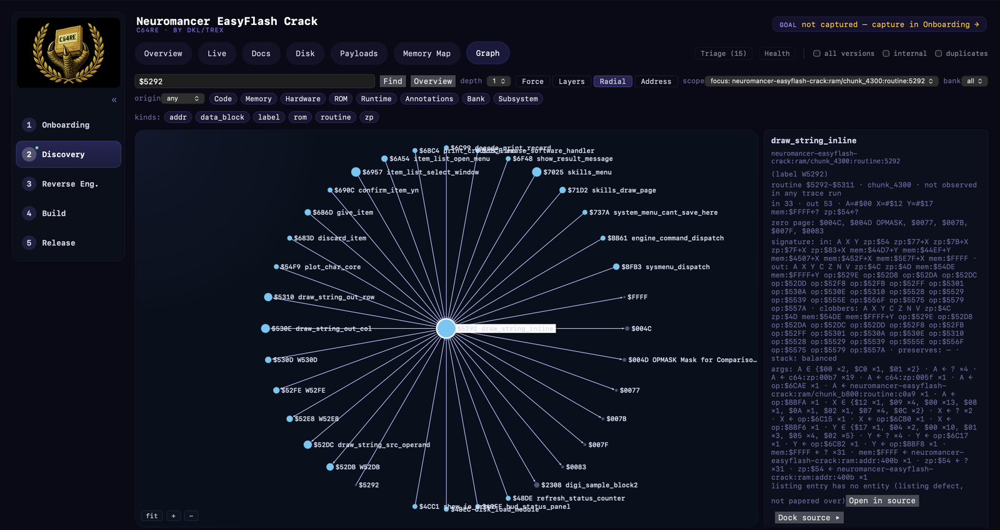

Real C64 projects built with C64RE and TRX64.
Each example is one project and one capability. Code excerpts are short illustrations from commercial games; the games and their code remain the property of their copyright holders.
01 · Full engine reverse engineering
The complete Wasteland engine, readable and editable.
Wasteland · Interplay, 1988 · 4 disk sides
The engine is disassembled and annotated end to end. Its data model — area records, scene scripts, foe records, the 5-bit text codec — is decoded. The game runs from one EasyFlash cartridge with a persistent world, and a web editor reads and writes the original record format.

What the tooling produced
- Annotated engine source: 7,226 lines. An API jump table at $0200–$04FF with 197 vectors is the interception surface for the cartridge backend.
- Extraction verified in both directions: 197 directory entries, 0 missing, 0 orphans.
- Cartridge port with a unified loader, per-file packing and a flash journal that keeps the world state across sessions.
- An editor for areas, texts, portraits and quests, with a byte-exact serializer back to the game's format.
Understanding from context
- Portraits carry no colour data of their own. This follows from the renderer, the fixed window colour setup and the foe records, whose byte 7 selects the portrait. Result: all 88 portraits export with their names.
- Text ids, items and paragraph triggers connect through the scene scripts. The editor derives a cross-area quest graph from item ids and keywords.
- Verification: the text codec re-encodes all 42 records with 0 differences. The engine's own record routine returns identical results for 4,407 (group, id) pairs; after a cartridge boot, live RAM matches the repacked data in 9,206 of 9,206 bytes.
02 · Disk-to-EasyFlash conversion
Six disk sides, one cartridge, one replaced routine.
Accolade Comics · Accolade, 1987 · released 2026 on CSDb ↗
Six floppy sides with a custom loader and copy protection became one 1 MB EasyFlash image (1,050,688 bytes). The build is reproducible and byte-identical. Semantic annotation made the loader architecture readable, so the port replaces one engine routine and keeps the rest byte-exact.

What the tooling produced
- Loader decoded: drive code uploaded to $0402, 2-byte key-addressed files, lookup-table pages; 728 unique files extracted.
- Only the sector-load routine at $1998 is replaced; it serves bytes from cartridge banks. Dispatcher $0C23, scene table $0900, sector assembler $0D46 and the script bytecode VM stay byte-exact.
- Protection checks are answered with a synthesised directory sector; save games are written to flash through EAPI.
Semantic annotation, same bytes
The deterministic disassembler produces addresses and generated labels. Semantic annotation adds routine names, contracts and caller references. The contract below is consistent with the code: the routine calls itself for lookup-table pages, calls the allocator, inserts a scene entry and streams sectors through $1998.
W0C23: // referenced from W0800, W0C5B, W1810, W1C46, ... lda $06 pha lda $07 pha txa pha tya pha jsr W132D bcs W0C37 lda #$00 jmp W0E5C
/* MAIN_DISPATCHER ($0C23-$0E71) * Primary file loader/dispatcher. X=key_hi, Y=key_lo. * Searches scene table first (cache hit path). On miss: * recursively loads LUT pages, allocates memory, inserts * a scene entry, streams sector data via $1998. * Returns C=0 success, or C=1 error with A=error code. */ main_dispatcher: // referenced from api_jmp_load, init_post_load, ... ... jsr search_entry bcs dispatch_check_lut_page_1 lda #$00 jmp dispatch_epilog
Excerpt from Accolade Comics (© 1987 Accolade). Routine header shortened.
03 · Behaviour-driven testing
Three Last Ninja games, one engine, zero differences.
Last Ninja 1–3 · System 3 · unified engine
The mechanics of three games are merged into one data-driven engine. Every migration step is gated by tests that run the original game and the new engine on identical input and compare the results. A hypothesis comes from reading the code; the test confirms it.
Ongoing work
How behaviour is tested
- Scenarios in Gherkin: given a real cartridge image, wait frames, hold the joystick, then read memory. Each run uses a private headless TRX64 machine.
- Replay: the original routine and the new routine run on identical inputs — 833,814 wall tests for Last Ninja, 608,334 for Last Ninja 2. Pass means 0 differences.
- Lock-step: the original game and the new engine run side by side with the same input and random seed and are compared at checkpoints.
What it found
- Last Ninja 2, level 6: the player walked off the roof in mid-air. Reading the converted level data predicted ignored edge handlers; lock-step confirmed the fall at x 54 via trigger 49. Replay differences went from 436 to 0.
- Documentation said Last Ninja 2 wall lines are one-sided. The code tests the crossing from both sides, and the replay's 436 differences were all enemy steps blocked that way. Reading the code found 32 such claims that the code contradicts.
- Status: collision, walls, falls, exits, sprites and hazards migrated with 0 differences. Combat, AI, items and boss logic are in progress.
Scenario: walking right, the roof edge starts a fall at x 54 (trigger id 49)
Given the disk "tools/a3/out/xl/unicart2_xl_start10.crt"
When I wait 700 frames
And I hold joystick 2 right for 34 frames
Then a FALL runs from x 54: fall_on = 1, trig_act = 49, exit lock $FF,
and the player is below the roof line
# returned: trig_act $B0 = $31, fall_on = 01, fall_x/y = $36/$5D (54,93)
And I wait 60 frames
Then the fall has ended in the death flow
# returned: fall_on = 02, fall_y = $75 (117 = 61 + 7 x 8), dead = 01
# The original's reference (lock-step): lands at (26,61) right edge: trigger 49 at x 54 left edge: trigger 50 at x 18 # Unified engine: identical.
Scenario steps run verbatim in the sandbox; the returned values are recorded under each step.
04 · A code graph for 6502 assembler
Every read, write and call in Neuromancer, queryable.
Neuromancer · Interplay, 1988 · engine, overlays and 1541 drive code
C64RE imports the deterministic analysis into a typed graph: 3,079 nodes and 11,889 edges from static analysis, plus a separate human layer of 1,634 annotated nodes that re-analysis never overwrites. Queries answer what a flat listing cannot: who writes a byte, what a routine takes and returns, and what breaks when it changes.

What the graph answers
- $7403 has exactly two writers: engine initialisation and the overlay itself. The readers are the demand-load test for the $7400 overlay slot, spread over two payloads.
- Engine API routine $5292 draws a string from 32 call sites. The computed signature flags that it reads its own return address — proof that the string pointer is an inline word after each JSR, which a linear disassembly decodes as garbage.
- Argument domains across call sites: the disk loader at $4BEC takes its sector from the tables at $FE3C and $6300, the ones the load-table documentation describes.
Impact before an edit
- Changing the two-instruction banking helper $4B9F breaks 6 direct callers. Through its write to $01 it also reaches the raster IRQ and the fastloader in another file — no call edge connects them.
- UNKNOWN is a separate result, never counted as low risk: indirect accesses, code on the 1541's own 6502, self-modifying writes.
- For the EasyFlash port, "identified" is defined as graph predicates: byte coverage, a signature per routine, every indirect access resolved or declared.



$ c64re graph signature '$5292' in: A X Y zp:$54 zp:$77+X zp:$7B+X ... clobbers: A X Y C Z N V zp:$4C zp:$4D + 20 self-modified operands stack: balanced [reads-return-address] ; caller side jsr draw_string_inline .byte $CE, $4C ; -> 'I/O Error.'
depth 1 will break (6)
copy_block_under_io, load_room_scene, ...
depth 2 likely affected (14)
sector_transfer reads $0001 (fastloader)
raster_irq_entry reads $0001
depth 3 may need testing (11)
UNKNOWN (35)
copy_block_under_io -> lda ($42),y
the graph holds the pointer, not the cell
Query output from the Neuromancer project graph, trimmed. Neuromancer © 1988 Interplay.